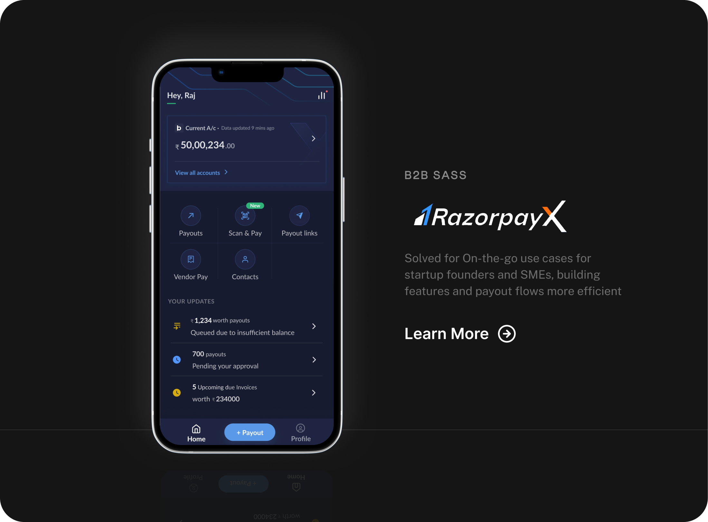

Building products, one step at a time.
I design serious digital products that still feel human, sharp, and commercially alive. Most recently across Razorpay, udaan, smallcase, Pagarbook, and Cuemath.
Same content, reinterpreted as a quieter editorial portfolio.
Scroll inI’m Abhishek Raj, and I love building products. I enjoy bringing ideas to life and driving them to execution.
Selected case studies


Research I did across product journeys, questions, and friction points.
Detailed research documents, working notes, and deeper framing that helped sharpen product direction beyond the surface layer.
Shopkeepers and Homepage
A UX research document focused on shopkeepers, homepage patterns, friction points, and opportunity areas across the Udaan journey.
Open full research
Razorpay Research
Research thinking around payment journeys, trust signals, operational friction, and clearer decision-making inside Razorpay flows.
Open full research
I also draw letters. R2 and R3 are custom type families built for cleaner interfaces and sharper display rhythm.
A personal type system shaped into specimen micro-sites with weights, character sets, interface scales, and a more precise rhythm.
R2
A type family designed for product surfaces that need utility, personality, and stronger hierarchy without losing calm.
Open specimen siteR3
A more fluid sibling built for warmer interfaces, lighter rhythm, and calmer editorial surfaces without losing structure.
Open specimen siteWhat I write when product decisions need sharper language.
Notes on design value, research, interaction systems, and the reasoning behind product choices that have to carry more than taste.
Design notes, essays, and interaction frameworks.
A quieter shelf for product language, research synthesis, and the reasoning behind decisions that have to carry business weight.
01
Essay
Articulating design value.
Expand
Articulating design value.
Making design contribution legible beyond taste, polish, and aesthetics alone.
Read note
02
Essay
Stitching research and product.
Expand
Stitching research and product.
Joining field insight with product motion so research can actually steer the roadmap.
Read note
03
Essay
From insight to impact.
Expand
From insight to impact.
Translating observations into concrete design choices that move product and business forward.
Read note
04
Guide
IMDS guide to interaction frameworks.
Expand
IMDS guide to interaction frameworks.
A framework-first way to think about interaction patterns, decision states, and product consistency.
Read guide